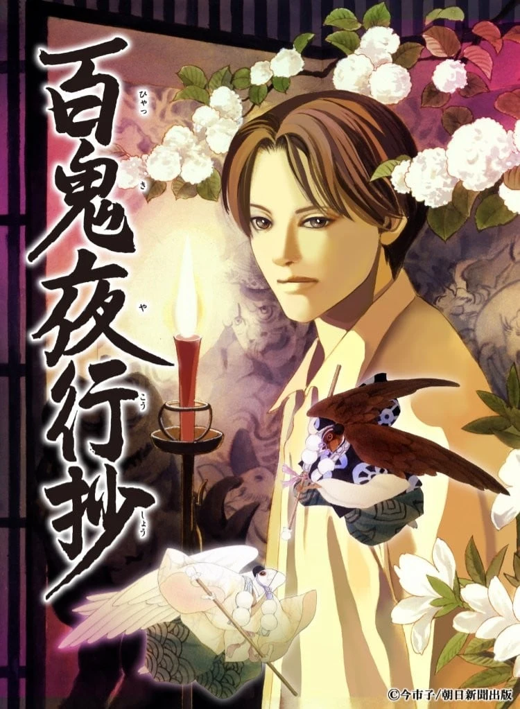

COMPLETE RECORD · Pages 轻量资料
百鬼夜行抄
- 形式
- TV
- 首播
- 2026-04-07
- 集数
- 12 集
- 评分
- 3.7
- 评分人数
- 108
SYNOPSIS
简介
律从已故祖父那里继承了不可思议灵力，以及一位名为「青岚」的恶魔守护者。某一次，他梦见了童年的往事。在梦中，为了躲避妖魔的觊觎，年幼的律被迫打扮成女孩子的模样，却仍差点遭到一名少女幽灵的袭击。就在不久后的某一天，律亲眼目睹那名幽灵混在母亲茶道教室的学生群中，潜入了家中。正当律试图查明对方的真面目时，却在名为「捉迷藏」的游戏中，被灵体夺走了左眼！？
奇怪的事情似乎总是围绕着他们两人发生，而揭开所有这些神秘事件真相的重任就落在了他们身上。 每个故事都是独立的，但其中穿插着一些会逐渐熟悉并喜爱的角色，他们各自以不同的方式应对着「非此世之事」。
[简介原文] 飯嶋律は、祖父・飯嶋蝸牛から 妖魔を見ることができる不思議な力を 受け継いでいた。 そのために幼い頃から妖魔に狙われてきた律は 妖魔の目をあざむくために 髪を伸ばし、女の子の着物を着せられて 育てられていた時期もあった。
蝸牛亡きあと、祖母、母親、父親と暮らす 律のかたわらには 彼を守護する三匹の妖魔がいた。
律の父親の体を借りた強力な妖魔・青嵐、 忠実ではあるが頼りにならない尾白と尾黒。
そしてさまざまな妖魔との出会いは 律とその家族を今日も 奇妙な事件に巻き込んでいく……
EPISODE LOG
正片章节
已收录 12 条正片章节
- 1樱之梦 ~遮眼鬼~ 首播：2026-04-07时长：4 分钟
- 2来访者 ~遮眼鬼~ 首播：2026-04-14时长：4 分钟
- 3不离之客 ~遮眼鬼~ 首播：2026-04-21时长：4 分钟
- 4鬼啊来这里 ~遮眼鬼~ 首播：2026-04-28时长：4 分钟
- 5被遮起來之物 ~遮眼鬼~ 首播：2026-05-05时长：4 分钟
- 6律与司 ~遮眼鬼~ 首播：2026-05-12时长：4 分钟
- 7饭岛蜗牛 ~遮眼鬼~ 首播：2026-05-19时长：4 分钟
- 8再次 ~遮眼鬼~ 首播：2026-05-26时长：4 分钟
- 9荒川绢代 ~遮眼鬼~ 首播：2026-06-02时长：4 分钟
- 10追忆 ~遮眼鬼~ 首播：2026-06-09时长：4 分钟
- 11姐姐 ~遮眼鬼~ 首播：2026-06-16时长：4 分钟
- 12樱落 ~遮眼鬼~ 首播：2026-06-23时长：4 分钟